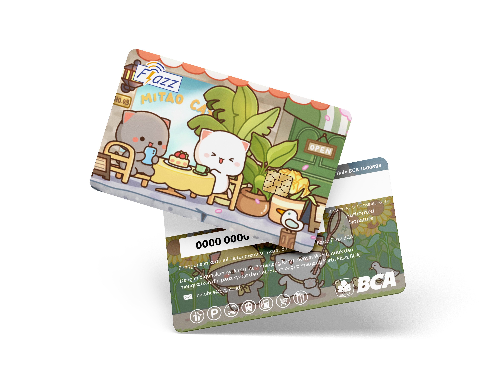

Hari demi hari, pelanggan mulai datang. Bukan hanya untuk membeli, tapi untuk menciptakan sesuatu yang punya arti-hadiah, kenangan, atau sekedar hal kecil yang berbeda.

Hari ini, Kokocetak bukan hanya tempat cetak.
Tapi tempat di mana ide kecil bisa jadi sesuatu yang nyata
Dan perjalanan ini masih terus berjalan